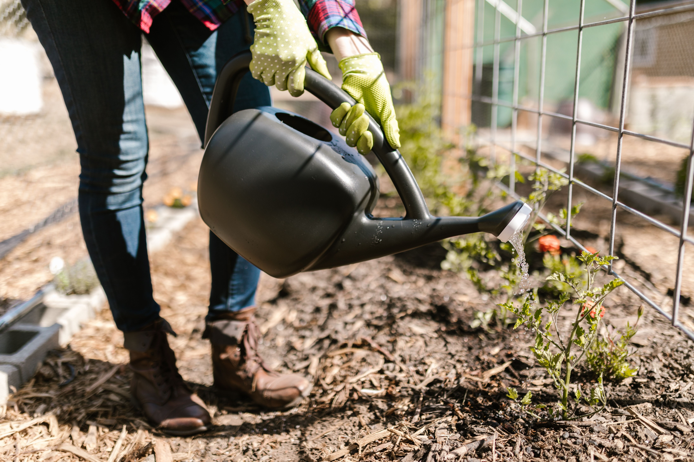
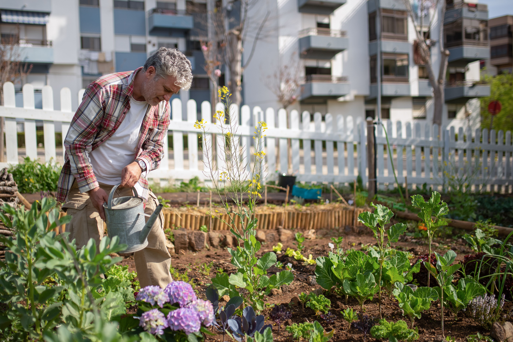

Gardening Tips

Water Regularly
Water plants early in the morning or during the evening to reduce evaporation and help plants stay healthy.

Grow Seasonal Vegetables
Choosing vegetables that suit the current season helps produce healthier crops and improves harvests throughout the year.

Use the Right Tools
Keeping gardening tools clean and in good condition makes gardening safer, easier and more enjoyable.